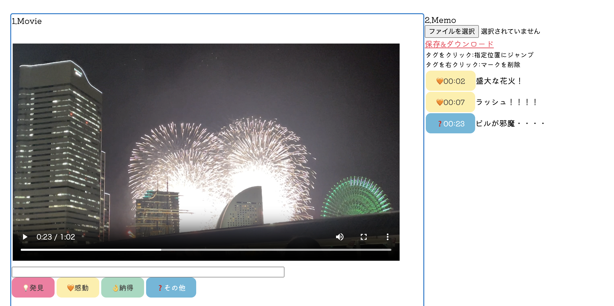
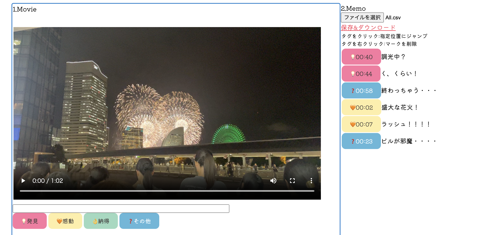
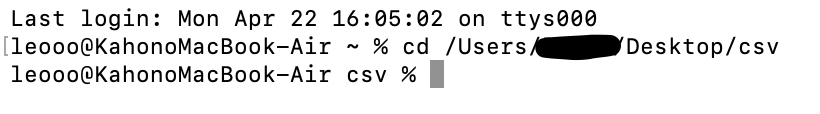

デジタルフィールドノート
このページで行う（道用さんお手製）
1. 1.Movieの[ファイルを選択]から動画を選択 （拡張子は.MOVや.mp4でOK）
2.コメントを残していく （この時動画の尺によって前半・後半と周りで分担するとGOOD!）


3.[保存&ダウンロード]をクリック→csvファイルが保存される（すべてtag.csvになってしまうので名前は自分で変える）
4.前半・後半で分けた場合は1人のところにファイルを集めて、csvだけのファイルを作る
csv統合
このページで行う（これも道用さんお手製）
1.[ファイル選択]でcsvだけのファイルから選択 （ファイル数を確認する）
2.[統合してダウンロード]をクリック （merged.csvがダウンロードされればOK）
3.デジタルフィールドノートに戻り、（動画が選択された状態で）2.MEMOの[ファイルを選択]からダウンロードしたmerged.csvを選択
4.↓この状態になれば完了 （うまくできれば時間は順番通りになる）

*今回授業中はうまくいったが、その後もう1度行ったら統合がうまくできなかった。（原因不明）
そのためインターネット検索をし、
こちらのページを
参考にターミナル（MacBookに搭載）で統合を行った。
（Windowsユーザーは
こちらのページの「1.コマンドでまとめる方法」を参照してください。）
↓自分的に少しわかりにくいところがあったので、簡単に説明（csvファイルの統合直前までは同じ）
1.csvをまとめたファイルを開き、command+option+c でディレクトリをコピー
2.ターミナルを開き（Launchpadで検索するとすぐに出る）、以下を入力
cd /Users/Macのユーザー名/Downloads
・cdの後はスペースを入れる
・コピーしたディレクトリをペーストペースト（/Users/Macのユーザー名/Downloads はあくまで例なので注意）
→私の場合は cd /Users/ユーザー名/Desktop/csv となる
3.ここまできたらEnterを押す ↓こうなればOK

4.そして以下を入力
cat *.csv > All_test.csv
・All_test.csvは統合後のファイル名になるので、〜〜.csvにする
5.csvをまとめたファイルを見ると〜〜.csvというファイルが新しくできていれば完了（ただし時間の順番は順番通りにならない）
6.あとはデジタルフィールドノートに戻り、元の作業をして終了